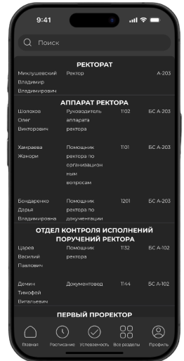
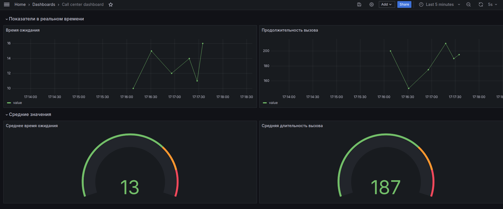

Журнал
ЖурналНовости.


На этом этапе была сформирована команда для разработки Личного кабинета, включая специалистов по C#, Python, базам данных, фронтенду и DevOps. Разработчики начали анализировать существующие механизмы работы Личного кабинета и адаптировать их для дальнейшей модернизации. Работы продолжаются по интеграции микросервисов и созданию эффективной архитектуры. Разработчики для Android и iOS были успешно собраны в команды, что позволило начать параллельную работу над мобильными приложениями. Важно было создать прототипы UI-экранов для телефонного справочника в Figma, чтобы обеспечить согласованность интерфейса для обеих платформ. Команды также разработали единый подход к функциональности, обеспечивая одинаковый пользовательский опыт на всех устройствах.


В Figma были разработаны детализированные UI-экраны для приложения, охватывающие ключевые разделы, такие как "Телефонный справочник" и "Главная". Эти экраны представляют собой визуальные и функциональные прототипы интерфейса для пользователей на обеих платформах — Android и iOS, с учетом особенностей каждой операционной системы. Примеры представлены на рисунках 1-4, где 1-2 - экраны для Android, 3-4 – экраны для iOS.

На данный момент был развернут сервис Grafana на личном устройстве одного из разработчиков и создана тестовая база данных телефонии. Были созданы визуализации ключевых показателей, таких как время ожидания и продолжительность вызова, а также средние значения по этим показателям. Эти данные визуализируются в реальном времени, что позволяет отслеживать эффективность работы операторов и уровень обслуживания абонентов